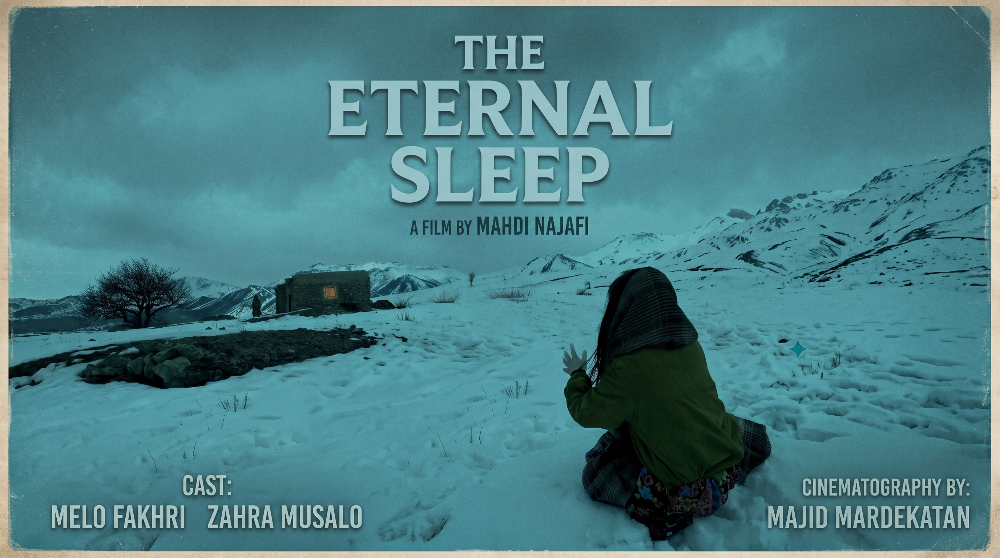

System Role: Aesthetic Inquiry • Camera Motion & Shifting Negative Space
Written & Directed by Mahdi Najafi
The Eternal Sleep

▶
Watch Film on YouTube ↗
Directorial Foundation:
A linear short film exploring slow, controlled camera movement, wide-angle lenses, and shifting negative space. Rather than relying on locked-off shots, the camera moves deliberately through the environment, creating the persistent sensation of an unseen observer. The film examines how continuous camera motion alters composition and guides viewer focus across the frame, establishing the creative foundation for understanding how moving viewpoints influence spectator attention and suspense.